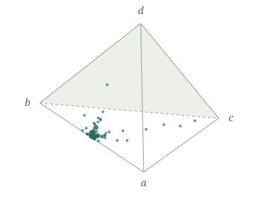

Explore the data
Interactive plots
Compare 9,512 attention heads across 14 models. Rotate the profile simplex and explore relative distances in the RoPE models.
Browse all modelsMathematics of attention
A geometric view of the bilinear forms inside trained language models. Explore the empirical profiles, the mathematics, and its Lean formalization.

Compare 9,512 attention heads across 14 models. Rotate the profile simplex and explore relative distances in the RoPE models.
Browse all modelsRead mathematical statements and proof outlines, with direct links to their checked Lean declarations.
Appendices A–C, the profile definition, and the theorem on simplex faces.
The paper
The paper will be linked here when it is available on arXiv.
Code & data